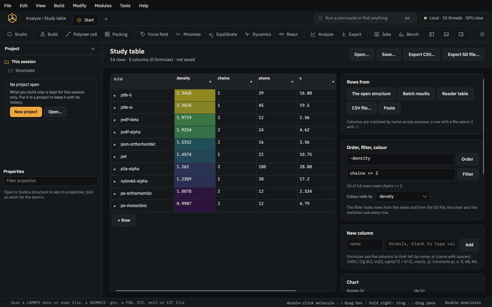

Analyse & export · module 24
Scattering & diffraction
Compute the X-ray, electron or neutron pattern of the open cell and lay it over a measured one: the powder pattern with every reflection, a Rietveld or Pawley fit of a measured 2θ pattern, the cells that index its lines, the total scattering I(q) of an amorphous cell, and atomic displacement parameters from a trajectory.
Open it Modules›Analysis›Scattering…
- You start with
- A crystal or any periodic cell, or a trajectory (to average frames, and for displacement parameters); a measured pattern to fit.
- You get
- Reflections (h k l, d, 2θ, multiplicity, intensity) and I(2θ); a refined cell with measured, calculated and difference curves; candidate cells ranked by M20; I(q) for X-rays and neutrons; U_ij, U_iso and B per atom or site, and a CIF with them.
Step by step
Open the structure and the page
Open a crystal (a CIF, a library crystal) or a simulated cell, then Modules › Analysis › Scattering…. Total scattering I(q) shows the reciprocal-lattice sum with the g(r) transform above it, for amorphous cells and local order; Powder pattern 2θ shows the reflections as a diffractometer records them.
Set the powder pattern
Under Powder pattern: the tube (Cu, Mo, Co, Fe, Cr or Ag Kα, with Kα2 at half the intensity), the 2θ range, the instrument width W, the crystallite size in nm (Scherrer broadening), the microstrain, a temperature factor B and the peak profile.
For a drawn fibre or a rolled film, give the planes the crystallites lie along and the March–Dollase r. Average the trajectory's frames lets the thermal motion of an MD run damp the reflections and add diffuse scattering. Press Pattern.
Read the reflections
The table lists h k l, d, 2θ, the multiplicity M and the intensity I (strongest 100); the plot draws I(2θ).
Load a measured pattern
Load experimental curve reads two columns (q in Å⁻¹, or 2θ in degrees, and intensity) or a PANalytical .xrdml, GSAS, Bruker .uxd or Rigaku .asc file, and draws it with the calculated one.
Refine and index
With a measured 2θ pattern loaded, Refine against it fits it with the open crystal: the lattice, zero shift, peak widths, background and scale (Rietveld). Tick Pawley (free intensities) to leave each reflection's intensity free and fit only the cell and the peak shapes. The plot shows the measured, calculated and difference curves.
Index it finds the cells whose reflections fall on the measured lines (its peaks found, Kα2 dropped), best M20 first.
From the command line,
caps refinealso takes several crystals and gives their weight fractions, andcaps solvefinds a molecular crystal against the pattern by simulated annealing in direct space.Displacement parameters from MD
Open a trajectory of a crystal. Under Atomic displacement parameters, give the repeats of the unit cell in the trajectory's cell (atoms on the same place of the unit cell form a site), then Compute for U_ij, U_iso and B of each atom or site. Colour by U_iso shows the mobile atoms bright; Write CIF with U_ij… writes the mean positions with their anisotropic U.
Measured data in other formats
caps datareads a measured curve (columns, .xrdml, GSAS, .uxd, Rigaku, JCAMP-DX) or a Gaussian .cube grid and writes it as CSV, .cube, .vtk or .npy. Bruker binary .raw, STOE .xyd and GSAS ALT/TOF files are not read: no public specification could be checked.
The same without the Studio
Every Studio page calls the same core as the caps command and the caps Python package, so a step you clicked can be repeated in a script.
caps powder pe-orthorhombic.cif --anode Cu --two-theta 10:45 --size 200 --csv pe_xrd.csv
caps refine measured.xy pe-orthorhombic.cif --anode Cu --two-theta 10,60 --json fit.json
caps index measured.xy --systems orthorhombic,monoclinic
caps adp traj.lammpstrj --topology cell.data --supercell 3,5,8 --cif sites.cif
caps data pattern.xrdml -o pattern.csvimport caps
pe = caps.open("pe-orthorhombic.cif")
pat = pe.powder(anode="Cu", two_theta=(10, 45), size=200) # size in Å
for p in pat["peaks"][:3]:
print(p["h"], p["k"], p["l"], p["two_theta"], p["intensity"])
fit = pe.refine("measured.xy") # Rietveld; mode="pawley" for free intensities
print(fit["rwp"], fit["phases"][0]["lattice"])Where to go next

Analyse & exportStudy tableResults of many structures and runs in one sheet: formula columns, order and filters, charts with fits, statistics and structure-property models. RunThermal propertiesThermal conductivity by Green–Kubo or reverse NEMD; for crystals, phonons, quasi-harmonic expansion, dielectric and piezoelectric tensors and the Z-method melting point.
RunThermal propertiesThermal conductivity by Green–Kubo or reverse NEMD; for crystals, phonons, quasi-harmonic expansion, dielectric and piezoelectric tensors and the Z-method melting point.